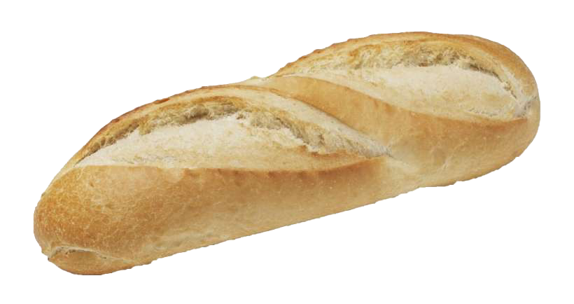
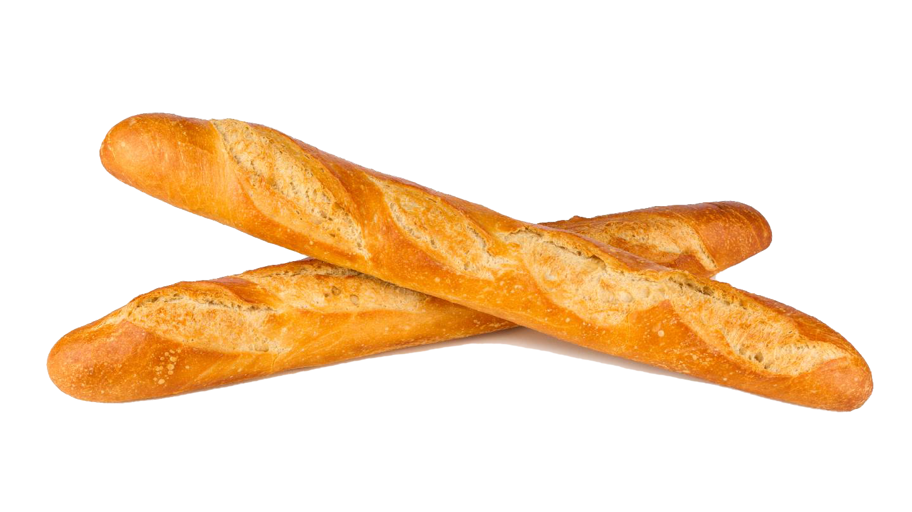

Il était une fois, dans un lointain pays, un petit grain de blé qui rêvait de devenir un grand pain. Il a été planté dans un champ, a été arrosé et a grandi pour devenir une belle épis de blé. Le petit grain de blé a été récolté et a été transporté dans un moulin où il a été transformé en farine. Puis, cette farine a été mélangée à de l'eau et à de la levure, pétrie et enfin cuite pour devenir un délicieux pain croustillant. Ainsi, notre petit grain de blé a finalement réalisé son rêve de devenir un grand pain qui a été mangé avec joie et apprécié par des gens de tous les horizons. Et depuis lors, les grains de blé du monde entier rêvent de suivre ses traces pour devenir des pains célèbres.
  Les ingrédientsCeci est un paragraphe dans la section.